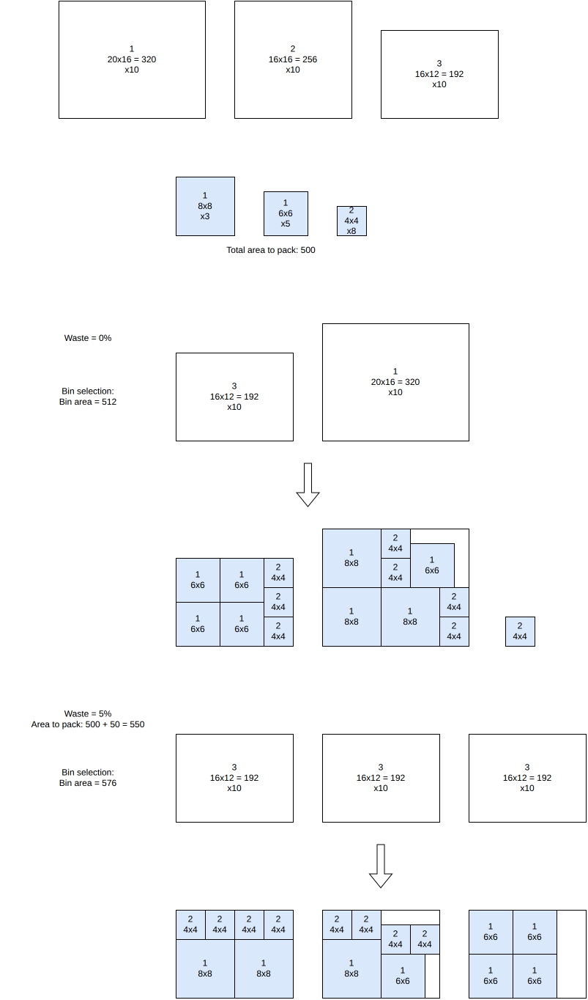

Dichotomic search¶
Objectives¶
This algorithm solves the variable-sized-bin-packing objective. It is available for the onedimensional, rectangle, rectangleguillotine, box and irregular problem types.
Principle¶
In variable-sized bin packing, the difficulty is to choose which bins to use; once they are chosen, packing the items into them is a bin packing problem. The algorithm chooses the bins from an estimate of the waste of the solution, and searches the smallest waste which can be reached, by dichotomy.
For a waste estimate \(w\) (a fraction of the space of the items), the bins to use must provide at least the space of the items times \(1 + w\). The cheapest set of bins providing this space is computed by solving a one-dimensional knapsack problem with dynamic programming, choosing the bins not used:
Input:
the optional bins \(b\) (the copies of the bin types beyond their minimum numbers of copies; the mandatory ones are always used); for each optional bin \(b\): its cost \(c_b\) and its space \(S_b\)
the total space \(S\) of all the bins, the space \(S^{\min}\) of the mandatory bins, and the space \(S^{\text{items}}\) of the items
Variables:
\(z_b \in \{0, 1\}\): \(z_b = 1\) iff bin \(b\) is not used
Objective: maximize the cost of the bins not used, that is, minimize the cost of the bins used
Constraints:
Space: the bins used provide at least the space of the items plus the estimated waste
Then a bin-packing sub-problem is solved, with the items and the bins chosen, then the other bins. If all the items are packed in the bins chosen, the waste estimate is decreased; otherwise, it is increased.
In the example below, the items to pack have a total area of 500, and three bin types are available (20x16, 16x16 and 16x12). At a waste estimate of 0%, the smallest combination of bins reaching the required area is one 16x12 and one 20x16 bin (total area 512); packing all the items into exactly these two bins turns out to be infeasible, so the waste estimate is increased. At a waste estimate of 5% (required area 550), three 16x12 bins (total area 576) are enough, and this time every item packs successfully:


Search¶
The first estimate is 10%. While no estimate has succeeded, a failed estimate is doubled; then the estimate is the middle of the smallest estimate which succeeded and of the largest one which failed. The search stops when the two are closer than 0.001%. The result of each set of bins is memorized, so a set of bins is never solved twice.
This algorithm works well for the instances with many bin types, or with bins in which many items fit: then, the column generation algorithm struggles.
Automatic selection¶
For the variable-sized-bin-packing objective with several bin types, it is run when many items fit in a bin. See algorithm selection.
It can be forced with --use-dichotomic-search 1 (CLI) or use_dichotomic_search (Python).
Source files¶
src/algorithms/dichotomic_search.hpp